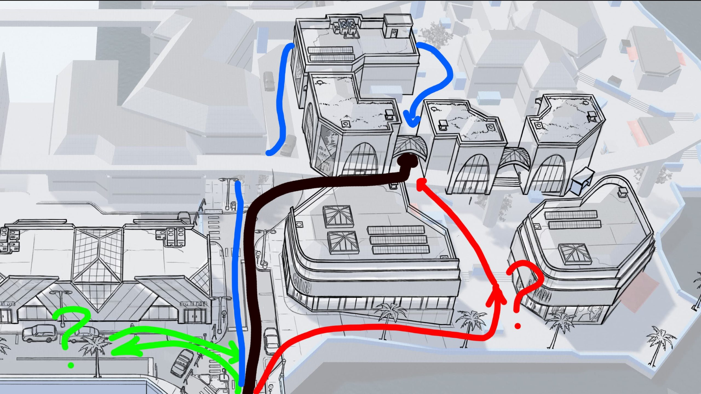

프로젝트에 대한 파일을 단순히 저장하는 것이 아닌, 효율적으로 관리하는 방법을 익히고 이를 통해 협업 및 개발 효율을 높일 수 있습니다.
프로젝트 컨벤션
프로젝트 컨벤션이란 프로젝트를 진행하는 과정에서 파일 및 폴더의 네이밍, 구조, 버전 관리 등을 일관된 방식으로 관리하는 것을 의미합니다. 보통 프로젝트의 규모가 커질수록 이러한 컨벤션은 필수적입니다. 또한, 원활한 협업을 위해서도 필요한 요소입니다.
폴더 구조
프로젝트의 폴더 구조는 프로젝트의 규모와 특성에 따라 다르지만, 일반적으로 아래와 같은 구조를 가질 수 있습니다.
이해를 쉽게 하기 위하여 Unity 프로젝트의 구조를 예시로 들어보겠습니다. (Unreal Engine, Godot 등 다른 엔진도 유사한 구조를 가질 수 있습니다.)
위와 같은 구조를 사용하면, 기능별로 파일을 분류하여 관리할 수 있습니다. 이러한 구조는 아래와 같은 장점을 가집니다.
기능별로 파일을 분류하여 관리할 수 있음
프로젝트의 규모가 커져도 관리가 용이함
팀원 간 협업 시 파일을 쉽게 찾을 수 있음
하지만 이러한 구조도 아래와 같은 단점을 가집니다.
프로젝트의 특성에 따라 적합하지 않을 수 있음
되려 간단한 프로젝트에서는 복잡할 수 있음
작은 프로젝트에서는 과도한 구조화로 인해 오히려 관리가 어려울 수 있음
파일 네이밍
파일 네이밍은 파일을 쉽게 찾을 수 있도록 하는 것이 목적입니다. 적절하게 만들어진 파일 네이밍 규칙은 프로젝트의 효율성을 높일 뿐만 아니라 원활한 협업을 가능하게 합니다. 생각보다 중요한 부분이므로 신경써서 관리하는 것이 좋습니다.
파일 네이밍 규칙
의미 있는 이름 사용
Test1.cs, Test2.cs와 같은 이름은 의미가 없으므로 피하는 것이 좋음.
PlayerController1.cs 처럼 같은 기능을 하는 파일에 버전을 붙이는 것은 좋은 방법이라고 할 수 없음. 의미 없이 스크립트 이름 뒤에 숫자를 붙이는 것은 피하는 것이 좋음. 버전 관리는 VCS를 사용하는 것이 올바르고 효율적인 방법임.
파일의 역할을 알 수 있도록 작성
생각보다 약어를 사용하는것이 도움이 되지 않는 경우가 많음. 되려 혼란을 야기할 수 있음.
에셋 파일(모델링이나 텍스처 등의)의 타입을 알 수 있도록 작성
M_Weapon_Sword.obj, T_Weapon_Sword_Diffuse.png와 같이 파일의 타입을 알 수 있도록 작성하는 것이 좋음.
특히 Unreal Engine, Unity 등의 게임 엔진에서는 파일의 타입을 알 수 있도록 작성하는 것이 중요함.
에셋의 Tag, Layer, 이름 등을 통해 파일의 타입을 알 수 있도록 하는 것이 좋음.
예를 들어, Player, Enemy, Item 등의 태그를 사용하여 파일의 타입을 구분할 수 있음.
Unity의 경우 Asset Label을 사용하여 파일의 타입을 구분할 수 있음.(검색 기능을 사용하여 Asset Label을 통해 파일을 찾을 수 있음)
파일 네이밍 예시
스크립트 파일 (일반적으로 PascalCase를 사용)
GameManager.cs
SoundManager.cs
SceneController.cs
PlayerController.cs
EnemyController.cs
ItemController.cs
에셋 파일 (일반적으로 Pascal Snake Case를 사용)
M_Player.fbx
T_Player_Albedo.png
T_Player_Normal.png
T_Player_Metallic.png
T_Player_Roughness.png
M_Enemy.fbx
T_Enemy_Albedo.png
T_Enemy_Normal.png
T_Enemy_Metallic.png
T_Enemy_Roughness.png
씬 파일 (일반적으로 PascalCase를 사용)
MainScene.unity
GameScene.unity
TitleScene.unity
LoadingScene.unity
프리팹 파일 (일반적으로 PascalCase를 사용)
Player.prefab
Enemy.prefab
Item.prefab
Bullet.prefab
Explosion.prefab
파일 네이밍 주의사항
파일명에 특수문자 사용을 피함
특수문자는 파일명에 사용하지 않는 것이 좋음.
특수문자는 파일명을 읽기 어렵게 만들 수 있음.
UTF-8, ASCII 등의 인코딩 문제로 인해 파일명이 깨지는 경우가 있음. 이를 피하기 위해 최대한 영문명을 사용하는 것이 좋음.
프로젝트의 이름과 폴더명을 영문으로 작성하는 것이 좋음.
파일명에 공백 사용을 피함
파일명에 공백을 사용하지 않는 것이 좋음.
공백은 파일명을 읽기 어렵게 만들 수 있음.
파일명에 공백을 사용하면 파일을 찾을 때 어려움이 있을 수 있음.
파일명에 대소문자 구분을 주의
대소문자를 구분하는 파일 시스템에서는 파일명에 대소문자를 구분하여 작성하는 것이 좋음.
대소문자를 구분하지 않는 파일 시스템에서는 대소문자를 구분하지 않아도 되지만, 일관성을 유지하는 것이 좋음.
Naming Case
사용하는 엔진 혹은 프레임워크에 따라 파일명의 네이밍 케이스가 다를 수 있습니다. 일반적으로 사용되는 네이밍 케이스는 다음과 같습니다.
PascalCase
각 단어의 첫 글자를 대문자로 표기하고, 나머지는 소문자로 표기하는 방식
보통 클래스명에 사용. 파일명에도 사용할 수 있음.
ex) GameManager.cs, PlayerController.cs
camelCase
첫 단어의 첫 글자는 소문자로 표기하고, 나머지는 대문자로 표기하는 방식
보통 변수나 함수명에 사용
ex) playerController.cs, enemyController.cs
snake_case
단어 사이에 언더바(_)를 사용하여 구분하는 방식
보통 변수나 함수명에 사용
ex) player_controller.cs, enemy_controller.cs
kebab-case
단어 사이에 하이픈(-)을 사용하여 구분하는 방식
보통 파일명에는 사용하지 않음. URL이나 CSS 등에서 사용
ex) player-controller.cs, enemy-controller.cs
UPPERCASE
모든 글자를 대문자로 표기하는 방식
보통 상수나 enum 등에 사용
ex) PLAYERCONTROLLER.CS, ENEMYCONTROLLER.CS
lowercase
모든 글자를 소문자로 표기하는 방식
보통 사용을 권장하지 않음. 대소문자를 구분하지 않는 파일 시스템에서는 대소문자를 구분하지 않아도 되지만, 일관성을 유지하는 것이 좋음.
ex) playercontroller.cs, enemycontroller.cs
UPPER_SNAKE_CASE
단어 사이에 언더바(_)를 사용하여 구분하고, 모든 글자를 대문자로 표기하는 방식
보통 파일명에 사용하는 방식, 상수나 enum 등에 사용
ex) PLAYER_CONTROLLER.CS, ENEMY_CONTROLLER.CS
lower_snake_case
단어 사이에 언더바(_)를 사용하여 구분하고, 모든 글자를 소문자로 표기하는 방식
보통 파일명에 사용하는 방식, 변수나 함수명 등에 사용
ex) player_controller.cs, enemy_controller.cs
버전 관리
버전 관리를 통해 프로젝트의 변경 사항을 추적하고, 이전 버전으로 되돌릴 수 있습니다. 버전 관리 시스템을 사용하면 프로젝트의 변경 사항을 추적하고, 이전 버전으로 되돌릴 수 있습니다. 또한, 여러 명의 개발자가 협업할 때 변경 사항을 쉽게 공유하고, 충돌을 방지할 수 있습니다.
버전관리를 위하여 보통 사용되는 시스템은 Git, SVN 등이 있습니다.
대부분의 VCS는 텍스트 파일을 관리를 목적으로 하기 때문에, Unity, Unreal Engine, Godot 등의 게임 엔진에서는 VCS를 사용할 때 주의해야 합니다. (Git LFS, SVN Large File 등의 기능을 사용하여 대용량 파일을 관리할 수 있음)
Git을 사용할 때는 .gitignore 파일을 사용하여 불필요한 파일을 제외하고 관리하는 것이 좋음.
바이너리 파일 위주 프로젝트의 경우는 Git 보다는 Perforce, Plastic SCM 등의 VCS를 사용하는 것이 좋음.
Git 사용하기
Git은 분산 버전 관리 시스템으로, 여러 명의 개발자가 협업할 때 변경 사항을 쉽게 공유하고, 충돌을 방지할 수 있습니다. Git을 사용하면 프로젝트의 변경 사항을 추적하고, 이전 버전으로 되돌릴 수 있습니다.
이전에는 Git에서 대용량 바이너리 파일을 관리하는데 어려움이 있었지만, Git LFS를 사용하면 대용량 바이너리 파일을 관리할 수 있습니다.
Git LFS 사용하기
Git LFS는 Git Large File Storage의 약자로, 대용량 바이너리 파일을 관리하기 위한 Git 확장 프로그램입니다.
사용 방법
Git LFS를 설치한 후, Git LFS를 사용할 프로젝트로 이동하여 Git LFS를 초기화합니다.
$ gitadd. // 변경 사항을 추가
$ git commit -m "커밋 메시지" // 변경 사항을 커밋
커밋 메시지는 변경 사항을 요약하는 메시지로, 변경 사항을 추적할 수 있도록 명확하게 작성하는 것이 좋습니다.
ex) "플레이어 이동 구현", "적 AI 구현", "아이템 습득 구현"
Git Push
Git Push는 로컬 저장소의 변경 사항을 원격 저장소로 전송하는 명령어입니다.
Git Push를 통해 로컬 저장소의 변경 사항을 원격 저장소로 전송할 수 있습니다.
$ gitadd. // 변경 사항을 추가
$ git commit -m "커밋 메시지" // 변경 사항을 커밋
$ git push origin main // 변경 사항을 원격 저장소로 전송
Git Push를 사용할 때는 주의해야 합니다. 원격 저장소의 변경 사항을 덮어쓸 수 있으므로, 변경 사항을 확인한 후 Push하는 것이 좋습니다.
Git Pull
Git Pull은 원격 저장소의 변경 사항을 로컬 저장소로 가져오는 명령어입니다.
Git Pull을 통해 원격 저장소의 변경 사항을 로컬 저장소로 가져올 수 있습니다.
$ git pull origin main // 원격 저장소의 변경 사항을 로컬 저장소로 가져옴
Git Pull을 사용할 때는 주의해야 합니다. 로컬 저장소의 변경 사항을 덮어쓸 수 있으므로, 변경 사항을 확인한 후 Pull하는 것이 좋습니다.
Git Fetch
Git Fetch는 원격 저장소의 변경 사항을 가져오는 명령어입니다.
Git Fetch를 통해 원격 저장소의 변경 사항을 가져올 수 있습니다.
$ git fetch origin // 원격 저장소의 변경 사항을 가져옴
Git Fetch를 사용하면 원격 저장소의 변경 사항을 가져오지만, 로컬 저장소의 변경 사항을 업데이트하지 않습니다. 따라서, Git Fetch 후 Git Merge나 Git Rebase를 사용하여 변경 사항을 업데이트해야 합니다.
Git Merge
Git Merge는 브랜치를 병합하는 명령어입니다.
Git Merge를 통해 브랜치를 병합할 수 있습니다.
$ git checkout main // main 브랜치로 이동
$ git merge feature // feature 브랜치를 main 브랜치로 병합
$ git merge --continue // Merge를 계속 진행
$ git merge --abort // Merge를 중단
Git Merge를 사용할 때는 주의해야 합니다. 충돌이 발생할 수 있으므로, 충돌을 해결한 후 병합하는 것이 좋습니다.
이 때, Merge를 위한 도구들을 사용하는 것을 추천 드립니다. (ex. Visual Studio Code, Sourcetree 등)
Git Rebase
Git Rebase는 브랜치를 재배치하는 명령어입니다.
Git Rebase를 통해 브랜치를 재배치할 수 있습니다.
$ git rebase feature // feature 브랜치를 main 브랜치로 재배치
$ git rebase --continue // Rebase를 계속 진행
$ git rebase --abort // Rebase를 중단
Git Rebase를 사용할 때는 주의해야 합니다. 충돌이 발생할 수 있으므로, 충돌을 해결한 후 재배치하는 것이 좋습니다.
Git Stash
Git Stash는 변경 사항을 임시로 저장하는 명령어입니다.
Git Stash를 통해 변경 사항을 임시로 저장할 수 있습니다.
$ git stash // 변경 사항을 임시로 저장
$ git stash pop // 변경 사항을 다시 적용
$ git stash list // 변경 사항 목록 확인
Git Stash를 사용하면 변경 사항을 임시로 저장할 수 있으므로, 다른 작업을 할 때 변경 사항을 보관할 수 있습니다. 변경 사항을 임시로 저장한 후 다시 적용할 수 있습니다.
이슈 트래킹
Git-hub, GitLab, Bitbucket 등의 Git 호스팅 서비스를 사용하면 이슈 트래킹을 쉽게 할 수 있습니다. 이슈 트래킹을 통해 프로젝트의 진행 상황을 파악하고, 작업을 관리할 수 있습니다. 모두 사용법이 비슷하므로, 한 가지를 익히면 다른 것도 쉽게 사용할 수 있습니다.
이슈 트래킹의 장점
Github 마일스톤 사용하기
프로젝트를 단계별로 나누어 관리할 수 있음.
각 마일스톤 별로 이슈를 관리할 수 있음. 이슈를 마일스톤에 연결하여 프로젝트의 진행 상황을 파악할 수 있음.
Github 라벨 사용하기
이슈에 라벨을 붙여서 이슈의 상태를 표시할 수 있음.
라벨을 사용하여 이슈의 우선순위를 표시할 수 있음.
라벨을 사용하여 이슈의 종류를 표시할 수 있음.
그 외 Github 기능
Kanban Board
이슈를 칸반 보드로 관리할 수 있음.
이슈를 To Do, In Progress, Done 등의 칸반 보드로 이동하여 관리할 수 있음.
Projects
프로젝트를 관리할 수 있음.
프로젝트에 이슈를 추가하여 관리할 수 있음.
Wiki
프로젝트의 정보를 관리할 수 있음.
프로젝트의 정보를 Wiki로 작성하여 관리할 수 있음.
Pull Request
코드 리뷰를 위한 Pull Request를 생성할 수 있음.
Pull Request를 생성하여 코드 리뷰를 요청할 수 있음.
Code Review
코드 리뷰를 위한 기능을 제공함.
코드 리뷰를 통해 코드의 품질을 향상시킬 수 있음.
레벨디자인
레벨디자인은 게임의 무대가 되는 공간을 설계하고 구성하는 작업으로, 플레이어의 경험을 직접적으로 형성하는 핵심 요소입니다.
레벨디자인의 기본 이론
레벨디자인의 개념
구조와 소품, 도전 과제를 흥미롭게 배치하는 작업
게임 시스템이 실제로 구현되고 표현되는 공간을 만드는 과정

레벨디자인의 목표
플레이어에게 의미 있는 선택과 도전을 제공
게임의 스토리와 세계관을 효과적으로 전달
게임의 페이스와 난이도를 적절히 조절. 플레이어의 흥미를 유지하기 위해서 필수적인 요소
스토리와 게임플레이의 자연스러운 통합
비트루비우스의 레벨디자인 원칙
피르미타스(견고함): 구조적 안정성과 일관된 플레이어 경험 보장
예) 체크포인트, 튜토리얼, 난이도 조절
유틸리타스(유용성): 기능적이고 플레이어의 요구사항 충족
예) 플레이어의 목표 설정, 피드백 제공
베누스타스(즐거움): 시각적 매력과 감성적 경험 제공
예) 랜드마크, 라이팅, 사운드
레벨디자인 요소
레벨 디자인의 핵심 요소
공간 설계
내비게이션 지오메트리를 통한 플레이어 동선 설계
내비게이션 메쉬를 통해 플레이어의 이동 경로를 제한
자연스러운 이동 경로를 제공하여 플레이어의 편의성을 높임 (그렇지 않으면 플레이어 이탈로 이어질 수 있는 문제 발생)